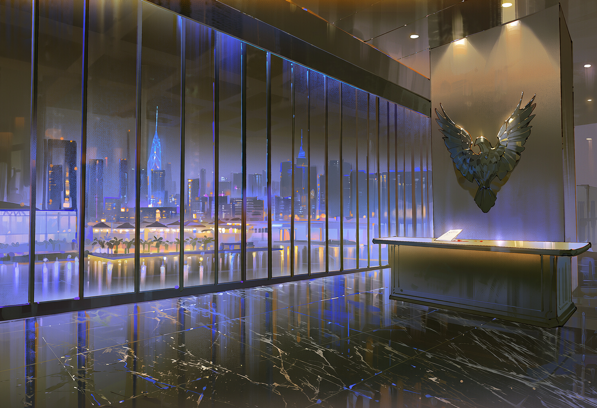

NEWSROOM
HOSPITALITY
호텔 · 리조트 · 카페
스트립의 카지노 호텔부터 다운타운의 부티크 카페까지. 24시간, 365일.
자세히 보기 →BIOTECH
혈액 · 의약 공급망
제휴 제약사와 함께 정제 혈액 제제의 안정적인 수급을 책임집니다.
자세히 보기 →LOGISTICS
야간 특수 물류
냉장 컨테이너 기반 심야 배송 네트워크. 해가 뜨기 전에 도착합니다.
자세히 보기 →
We keep the night running.
스트립의 카지노 호텔부터 다운타운의 부티크 카페까지. 24시간, 365일.
자세히 보기 →제휴 제약사와 함께 정제 혈액 제제의 안정적인 수급을 책임집니다.
자세히 보기 →냉장 컨테이너 기반 심야 배송 네트워크. 해가 뜨기 전에 도착합니다.
자세히 보기 →코르부스 그룹 직원 포털입니다.
등록된 손목 디바이스로만 접속할 수 있습니다.
※ BGM이 함께 재생돼요. 오른쪽 위 버튼으로 끌 수 있어요.
갈증도는 시간이 지나면 조금씩 오릅니다.
임무 보상은 완수와 보고가 확인된 뒤에만 지급됩니다. 거절할 수는 있지만, 배정 취소나 평가 불이익이 생길 수 있습니다.
왼쪽에서 대화를 고르면, 그쪽에서 먼저 말을 걸어올 거예요.
공식 종족명은 알터입니다. 인간의 피로 시간을 멈춘 존재로, 늙지 않는 몸과 개체마다 다른 이능을 지닙니다. 대외적으로 이 단어를 쓰지 마십시오.
| 0~29 | 안정 |
| 30~59 | 주의 |
| 60~79 | 위험 |
| 80~99 | 심각 |
| 100 | 폭주 |
하루에 2~5씩 오르고, 이능을 쓰면 1~10, 몸을 거칠게 쓰거나 싸우면 1~3이 더 오릅니다. 흡혈은 40~70, 응급 처치는 15~30을 낮춥니다.
폭주 개체는 이성을 잃었지만 회복할 수 있습니다. 폭주한 채 약 한 달을 방치하면 영구히 퇴화한 오염체가 됩니다. 오염체는 대화도 협상도 통하지 않습니다.
알터는 평범한 직업과 신분으로 인간 사회에 섞여 삽니다. 인간에게 정체가 드러나는 일은 하우스 규율 위반입니다.
임무는 손목 디바이스로 약 2주 간격에 배정됩니다. 거절할 수 있지만, 배정 취소나 평가 불이익이 생길 수 있습니다. 보상은 완수와 보고가 확인될 때만 지급합니다.
| 등급 | 기본급 | 유지비 | 거처 |
|---|---|---|---|
| F~E | 300 | 80 | 근무처 근처 방 |
| D~C | 500 | 160 | 스트립 호텔 장기 객실 |
| B~A | 800 | 300 | 고층 스위트 |
| S | 1200 | 500 | 펜트하우스 |
단위 CR. 기본 급식분은 하우스가 공급하므로 돈이 없어서 굶는 일은 없습니다. 추가분만 크레딧으로 구매합니다.
벨 지하, 셋째 밤 02시. 늦으면 없다.
크로니클 제보망 — 인간 쪽에서 새어 나온 이야기들. 노출 위험은 크로니클이 매깁니다.
언더럭스에서 산 정보는 여기 보관됩니다. 이 보관함도 하우스가 열람할 수 있습니다.